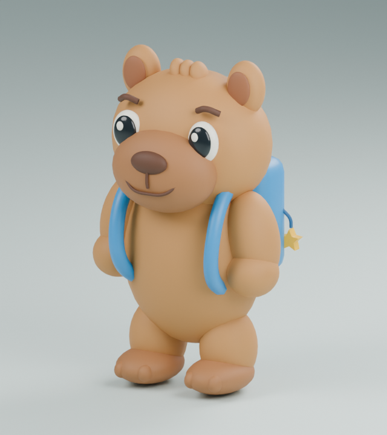
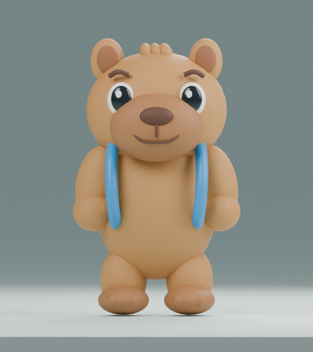
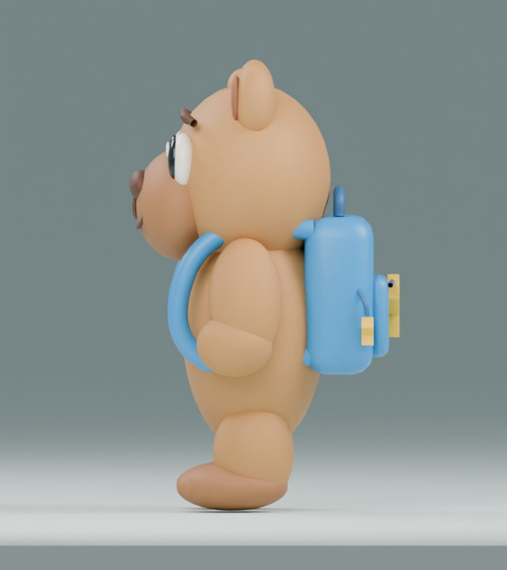
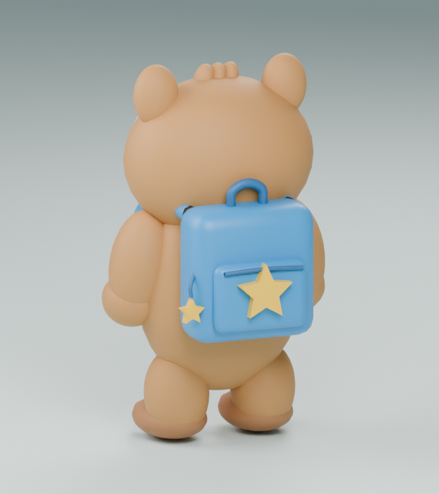

ETAPA 01 · v001 · REVISIÓN DE FORMALa mascota, en 3D real
Estas vistas se renderizan desde el archivo Blender entregado. Primera maqueta estática: revisar cara, proporciones, mochila y silueta. Superficie lisa; aún sin rig, animaciones ni colisiones. El parecido con la referencia necesita revisión artística.
Modelo GLB · Archivo Blender · Referencia artística

Tres cuartos · volumen
Frente · cara y proporciones
Perfil · hocico y mochila
Espalda · mochila y estrella22.816 triángulos · GLB sin compresión: 552.476 bytes. La iluminación de estudio sirve para inspección; el aspecto dentro de PlayCanvas deberá verificarse allí. Galería estática, sin necesidad de iniciar Blender ni de conexión a Internet.